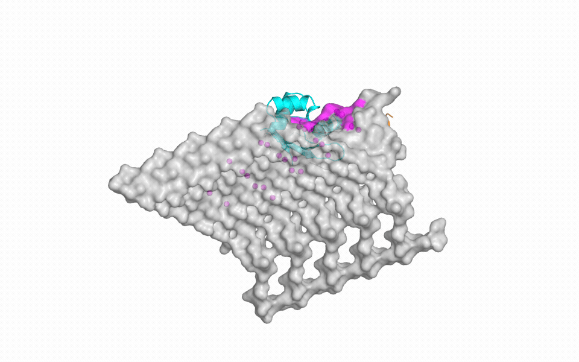

re:AGENT · Track C bio design
Constraints steer a binder to the lattice. Controls stop us from calling it validated.
A matched constrained-versus-free experiment on a five-chain GvpA patch, with evidence gates deciding what each model output is allowed to mean.
2.4%diameter error: 35.6 nm generated patch versus 36.5 nm source assembly
4 / 64unique candidates reached expensive co-fold screening (6.25%)
8 / 8 vs 0 / 8constrained versus free backbones localized to the GvpC-derived footprint
Assembly changes what can be bound
HIV capsidAdjacent subunits complete a high-affinity ligand pocket.Antiviral targeting
α-synuclein fibrilsHelical repetition creates polymorph-specific grooves.Selective labels and diagnostics
MicrotubulesThe polymer lattice encodes nucleotide state.Dynamic lattice sensors
AAV capsidsA repeated 60-subunit surface supports broad capture ligands.Affinity purification and capsid QC
Model architecture
1 · Assembly7R1C-derived five-chain GvpA surface. A 28-residue site is transferred from cross-species GvpC as a hypothesis.
2 · RFdiffusion38 constrained + 8 free de novo binder backbones. Same seeds, length range, and GPU budget.
3 · RefereeMeasure hotspot footprint and reject backbone clashes below 2 Å before buying more compute.
4 · ProteinMPNNRedesign binder chain only. Four sequences per backbone: 64 candidates.
5 · Boltz-2Screen two distinct backbones per arm; confirm one winner per arm across three seeds.
What the control run licenses
G5 · decoysPass
Scores carry signal.
G2 · specificityPass
Specificity comparisons.
G1 · interfaceFail
No pose/epitope claim.
G3 · affinityFail
No affinity ranking.
G4 · calibrationPass
Triage follow-up spend.
Matched design experiment

Designed binderGvpC-derived footprintAligned GvpC backbone traceGvpA patch
6–10hotspot residues contacted per backbone
0.7–2.5 Åclosest hotspot distance
4 / 8backbones rejected for <2 Å clash
0.2605winner mean binder–target ipTM
The site constraint changes where all eight backbones land, but creates a 50% steric-clash failure rate.
Result: directionally better, absolutely uncertain
Scientific conclusionThe constraint reliably controls localization and improves the downstream triage score. High seed sensitivity, low absolute confidence, and the failed G1 control mean the output is a novel testable sequence—not a validated binder.